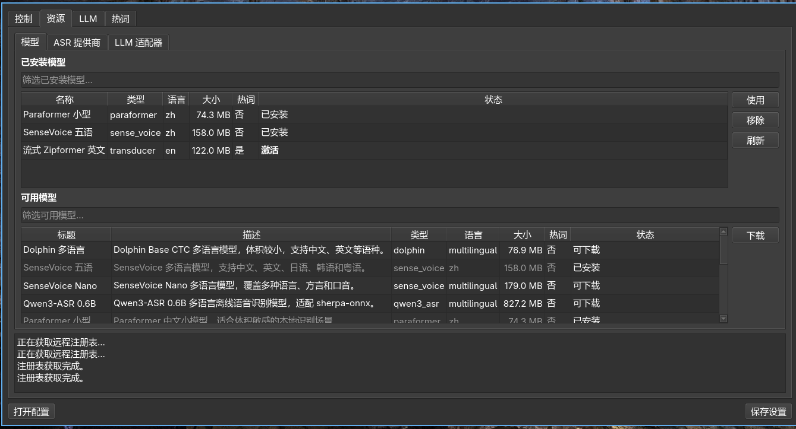
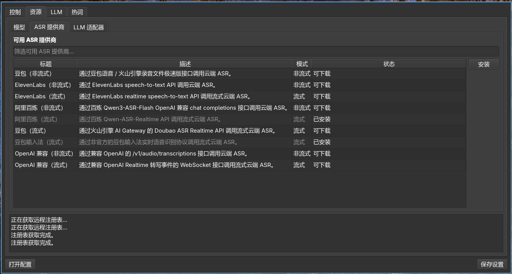

安装 vinput 前的准备
- 确保你已经安装配置好 fcitx5
- 确保你的麦克风能正常使用
安装并启用 Vinput
各发行版安装方法
Flatpak （通用，推荐）
flatpak remote-add --if-not-exists xifan https://xifan2333.github.io/flatpak-auto/xifan.flatpakrepo
flatpak install https://xifan2333.github.io/flatpak-auto/refs/org.fcitx.Fcitx5.Addon.Vinput.flatpakref
# 安装后额外授权
flatpak override --user --filesystem=xdg-run/pipewire-0 org.fcitx.Fcitx5
flatpak override --user --filesystem=xdg-config/systemd:create org.fcitx.Fcitx5
flatpak override --user --filesystem=xdg-cache org.fcitx.Fcitx5
flatpak kill org.fcitx.Fcitx5
Archlinux
yay -S fcitx5-vinput-bin
Fedora
sudo dnf copr enable xifan/fcitx5-vinput-bin
sudo dnf install fcitx5-vinput
Ubuntu
sudo add-apt-repository ppa:xifan233/ppa
sudo apt update
sudo apt install fcitx5-vinput
Debian
sudo dpkg -i fcitx5-vinput_*.deb
sudo apt-get install -f
NixOS
# flake.nix
inputs.fcitx5-vinput.url = "github:xifan2333/fcitx5-vinput";
nixConfig = {
extra-substituters = [ "https://fcitx5-vinput.cachix.org" ];
extra-trusted-public-keys = [
"fcitx5-vinput.cachix.org-1:XpX3AA6+dDIX4qJhb1QM7sbTwX6/qSlGvW8Z5NK6XdU="
];
};
启动服务
安装好之后启用 vinput 服务：
# 启动后台守护进程
systemctl --user enable --now vinput-daemon.service
# 重新加载 Fcitx5
fcitx5 -r
在 Fcitx5 中启用
打开 Fcitx5 配置 → 附加组件 → 找到 Vinput → 启用。
安装模型
图形 GUI
-
打开 Vinput GUI（从应用菜单启动，或在终端运行 vinput-gui）。
-
进入 资源 → 模型，在可用模型列表中选择需要的模型，点击 下载 安装，然后点击 使用 激活。
终端 CLI
vinput model list -a # 浏览可用模型
vinput model add <模型名> # 下载并安装
vinput model use <模型名> # 设置为当前模型
也可手动将模型目录放到 ~/.local/share/vinput/models/<模型名>/，目录内需包含：
vinput-model.json
model.int8.onnx 或 model.onnx
tokens.txt
本地模型

云端 ASR

开始使用
按键说明
| 按键 | 默认 | 功能 |
|---|---|---|
| 触发键 | Alt_R | 短按切换录音；长按即说即停 |
| 命令键 | Control_R | 选中文本后按住，语音指令修改选中内容 |
| ASR 菜单键 | F8 | 打开 ASR 提供商 / 模型切换菜单 |
| 场景菜单键 | Shift_R | 打开场景切换菜单 |
| 翻页 | Page Up / Page Down | 候选列表翻页 |
| 移动 | ↑ / ↓ | 候选列表移动光标 |
| 确认 | Enter | 确认选中候选 |
| 取消 | Esc | 关闭菜单 |
| 快选 | 1–9 | 快速选择候选 |
所有按键均可在 Fcitx5 配置界面中自定义。
💬 评论